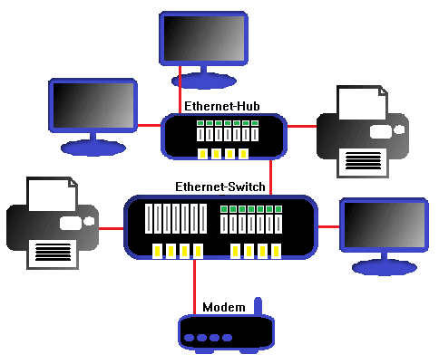

IEEE 802.3
Este estándar para redes basadas en cable se originó a finales de los años setenta y es mundialmente conocido como el estándar Ethernet. Inicialmente definió redes a velocidad de 10Mbps (Megabits por segundo) sobre cable de tipo coaxial o también de par trenzado. La mayoría de las redes de área local operan bajo este estándar o uno derivado del original Ethernet, actualmente Fast Ethernet (100Mbps) o Gigabit Ethernet (1000Mbps). Actualmente IEEE está trabajando (y casi terminando) el nuevo estándar de 10Gbps (Gigabits por segundo).
